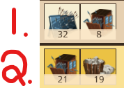
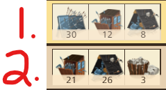

The Art of the Attack: Tool Waves
We have have two primary tool waves for the flanks:

{kind=link}
The first one is dutifully named the “Shield Wave” and, well, the other one doesn’t really get a name. Something like “Non-Shield Wave” or even “Moat Wave” would make sense. Who knows why it doesn’t get a name, I don’t make the rules. ¯\_(ツ)_/¯
I like calling them “Alt Waves” as in “alternate wave not containing shields”. It’s simple and most importantly, short lol.
The goal of the attacking tool is to reduce the defender’s bonus as close to 0% as possible.
I know what’s following is a lot to read. Take a breather. You’re doing great. Let’s dive in.
The Shield Wave
Let’s take a look at the 1st line.
{kind=link}
32 shields + 8 towers. This is the standard setup for 40-tool large flanks. Higher level players with the +10 tool wave limit will usually see this as 32 shields and 18 towers.
What’s special about the number 32? Well the easiest answer, is that we wouldn’t have enough room to add more tools, but that sidesteps the question too easily.
The definitive answer is that there is no answer. Books closed. Period over.
Bear with me. The item effectiveness of the shield wall is -15% ranged defender bonus. 32 x -15% = -480%. Let’s think about this from a defensive standpoint. Remember that the base power of ranged (and melee) on defense is 100%. The most ranged bonus from defensive tools you’ll ever see is 2 slits, which gives us 70% x 2 = 140% ranged power. That gives us +240% total. Casts usually hover around 230% bonus (300% is absolute max with something called widgets, but at that point, you should rethink hitting the person) which gives us… 470%. Aha!
The popular shield wall amount if you’re familiar with copy-paste formations is 37. That’s -555%. 100% (base) + 210% (3 slits) + 230% (castellan) = 540%. It’s a little higher if you account for dHOL bonuses (you don’t need to know what that is, just know it exists), but the math checks. The problem with the 37 shield argument, is that it either assumes (1) a 300% castellan or (2) a 3 slit setup. Both arguments are absurd.
An even more extreme argument purports 42 shields, which accounts for both option (1) and (2). This is more than absurd. We’ll pick this idea up later, but for now, disregard it.
The Alt Wave
Let’s borrow the second half of the image from earlier.
{kind=link}
21 towers + 19 boulders. This is the standard setup for 40-tool large flanks. Higher level players with the +10 tool wave limit will usually see this as 21 towers and 21 boulders.
Back to magic numbers. What is the significance of 21? A level 8 castle wall gives +200% defense. The max castellan wall bonus (excluding hero) is +220%. What about tools? No one uses wall tools on defense. No one. (Yes, I’m still ignoring sovereign tools.) 200% + 220% = 420% bonus. Each breaching tower grants -20% wall bonus. And wouldn’t you know it, 21 * -20% = -420%.
Why 19 boulders? It’s supposed to be 21, but if you’re stuck with only 40-tool large flanks, sacrifices must be made. Okay, so why 21 boulders then? Glad you asked. A level 4 ruby moat gives +85% moat. The max castellan moat bonus (excluding hero) is +120%. The moat tool has it’s own slot in the defense, so it will always be present. The strongest moat tool is the inferno moat which gives +110%. 85% + 120% + 110% = 315%. Each boulder grants -15% moat bonus. And look at that, 21 * -15% = -315%. Math is magical.
You can probably understand that a 40-tool wave can’t hold both 21 towers and 21 boulders. So why do we favor 21 towers over 21 boulders? Remember that the tower tool grants -20% wall bonus, but the moat tool only gives -15% moat bonus. This means that the wall has more value then the moat per tool. 21 towers and 19 boulders sacrifices 30% moat, but 19 towers and 21 boulders sacrifices 40% wall. Remember axiom 1? 40% wall > 30% moat. (:
And for those of you wondering why I didn’t use all 50-tool space, and elected to leave 8 slots empty, it is to save on tools. If you add more towers or moat`s, you won’t actually be reducing any potential defense, unless they’re using sovereign tools, but they have their own set of rules.
Front Formations
Beautiful, you made it to the other side. I won’t bore you wtih more math. The methodology behind the tool amounts was important, but this is a guide, not a poorly written manpage. (Well actually…)

{kind=link}
I fibbed. Here’s a little for those who are curious: 200% (level 8 gate) + 150% (2 porticuluses) + 160% (castellan, no hero) = 510%. -20% * 26 = -525%. There you go.
And yes I’ll finally explain why I’m not including the hero bonus in all of these. The castellan hero has 4 traits. Two of them will always be ranged and melee bonus (not guaranteed on the equipment, but players will always chose them). Ranged and melee bonuses persist from the wall attack to the courtyard battle. However, the wall, gate, and moat bonuses only apply to the wall attack, meaning their stats are half as valuable in full context. The other two bonuses are usually fought over by the early detection, the courtyard, and the overall strength substats. You don’t need to understand what any of that means. But for those who are asking, you have your answer. And those who asked and still don’t have an answer, tough (j/k, you’ll learn as you progress in the game). :P
All stats thus far are assuming max stats, but rarely will any of them actually be just by nature of the substat priority on equipment. You will almost never need every single wall and gate tool especially in the front wave. The moat tools are being choked out, due to the 50-tool limit on the front. You already know how to read defenses, so you can match your towers and gate to the enemy’s defense. Then you’ll free up space to squeeze more moat tools in.
Yeah, I’m not getting past you am I. Why 30 shields + 12 wall + 8 gate? If wall power = gate power, and both tools provide -20%, why is there more wall than gate? And why only 30 shields? I plead the 5th. I’m serious though. Try it, send varying amounts of shields, wall, and gate. I’d love to hear what is working for you. :D
Or you can keep it yourself. ;)
Putting it Altogether?
Where are the troops? Not yet. We need to take a look at defense again before we can insert the troops in the waves. Then we can put everything together. Cya there. (⁀ᗢ⁀)